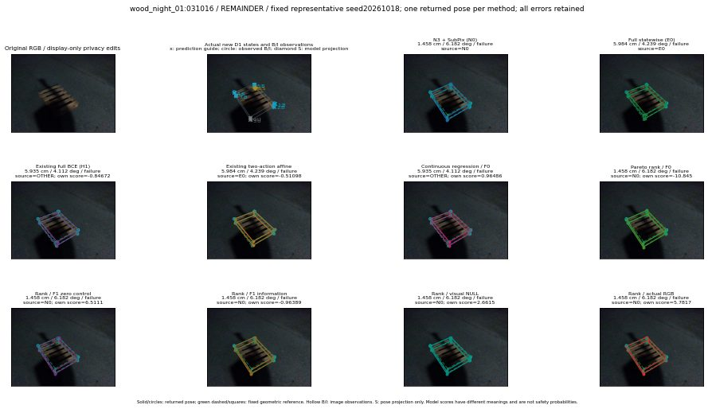

실선은 반환 자세, 초록 점선은 고정 기하 참조입니다. S는 영상 관측이 아닙니다. 점수는 모델별 의미가 다르며 보정된 안전 확률이 아닙니다. 개인정보 처리는 표시 사본에만 적용했습니다.
| 방법·seed | 위치 / 회전 / 공동성공 | 실제 출처 | 선택 후보 | 각 모델 자체 점수 |
|---|---|---|---|---|
| N0 | 1.458 cm / 6.182 deg / failure | N0 | N/A | N/A |
| E0 | 5.984 cm / 4.239 deg / failure | E0 | N/A | N/A |
| E0_REGENERATED | 5.984 cm / 4.239 deg / failure | E0 | E0_REGENERATED | N/A |
| POSEFIX_SUBPIX_PF_ANCHOR | 2.845 cm / 6.843 deg / failure | OTHER | N/A | N/A |
| POSEFIX_SUBPIX_YOLO_ANCHOR | 2.845 cm / 6.843 deg / failure | OTHER | N/A | N/A |
| D1_H1_MLP_s20261018 | 5.935 cm / 4.112 deg / failure | OTHER | WD0/ORIGINAL_WD/selected | -0.846723198890686 |
| D1_H1_MLP_s20261019 | 5.935 cm / 4.112 deg / failure | OTHER | WD0/ORIGINAL_WD/selected | -0.8171194791793823 |
| D1_H1_MLP_s20261020 | 5.935 cm / 4.112 deg / failure | OTHER | WD0/ORIGINAL_WD/selected | -2.3160135746002197 |
| D1_H1_PAIR_MLP_s20261018 | 5.984 cm / 4.239 deg / failure | E0 | E0_REGENERATED | -1.1283098459243774 |
| D1_H1_PAIR_MLP_s20261019 | 1.458 cm / 6.182 deg / failure | N0 | N0 | -1.5484358072280884 |
| D1_H1_PAIR_MLP_s20261020 | 5.984 cm / 4.239 deg / failure | E0 | E0_REGENERATED | -2.0296316146850586 |
| D1_H1_PAIR_ROLE_AFFINE_s20261018 | 5.984 cm / 4.239 deg / failure | E0 | E0_REGENERATED | -0.5109809637069702 |
| D1_H1_PAIR_ROLE_AFFINE_s20261019 | 5.984 cm / 4.239 deg / failure | E0 | E0_REGENERATED | -0.7596872448921204 |
| D1_H1_PAIR_ROLE_AFFINE_s20261020 | 1.458 cm / 6.182 deg / failure | N0 | N0 | -0.5385545492172241 |
| R_CONT_F0_s20261018 | 5.935 cm / 4.112 deg / failure | OTHER | WD0/ORIGINAL_WD/selected | 0.964857816696167 |
| R_CONT_F0_s20261019 | 5.935 cm / 4.112 deg / failure | OTHER | WD0/ORIGINAL_WD/selected | 1.0338191986083984 |
| R_CONT_F0_s20261020 | 5.935 cm / 4.112 deg / failure | OTHER | WD0/ORIGINAL_WD/selected | 0.9754945039749146 |
| R_ORDER_F0_s20261018 | 1.458 cm / 6.182 deg / failure | N0 | N0 | -10.844738960266113 |
| R_ORDER_F0_s20261019 | 5.984 cm / 4.239 deg / failure | E0 | E0_REGENERATED | -8.952868461608887 |
| R_ORDER_F0_s20261020 | 1.458 cm / 6.182 deg / failure | N0 | N0 | -1.888896107673645 |
| R_ORDER_F1_ZERO_s20261018 | 1.458 cm / 6.182 deg / failure | N0 | N0 | 6.511139392852783 |
| R_ORDER_F1_ZERO_s20261019 | 5.935 cm / 4.112 deg / failure | OTHER | WD0/ORIGINAL_WD/selected | -6.243960380554199 |
| R_ORDER_F1_ZERO_s20261020 | 5.984 cm / 4.239 deg / failure | E0 | E0_REGENERATED | -0.030843183398246765 |
| R_ORDER_F1_s20261018 | 1.458 cm / 6.182 deg / failure | N0 | N0 | -0.9638909697532654 |
| R_ORDER_F1_s20261019 | 5.984 cm / 4.239 deg / failure | E0 | E0_REGENERATED | 5.850209712982178 |
| R_ORDER_F1_s20261020 | 5.984 cm / 4.239 deg / failure | E0 | E0_REGENERATED | 1.2123565673828125 |
| V_ORDER_NULL_s20261018 | 1.458 cm / 6.182 deg / failure | N0 | N0 | 2.661479949951172 |
| V_ORDER_NULL_s20261019 | 5.984 cm / 4.239 deg / failure | E0 | E0_REGENERATED | 2.3166403770446777 |
| V_ORDER_NULL_s20261020 | 5.984 cm / 4.239 deg / failure | E0 | E0_REGENERATED | 1.8999897241592407 |
| V_ORDER_RGB_s20261018 | 1.458 cm / 6.182 deg / failure | N0 | N0 | 5.781723976135254 |
| V_ORDER_RGB_s20261019 | 5.984 cm / 4.239 deg / failure | E0 | E0_REGENERATED | 1.7681888341903687 |
| V_ORDER_RGB_s20261020 | 5.984 cm / 4.239 deg / failure | E0 | E0_REGENERATED | -5.039379596710205 |